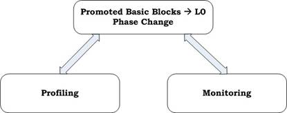

Energy efficiency of Hotspot Cache
The energy advantage of the Filter Cache comes from the references that hit in the L0 cache. The L0 cache hits are results of temporal locality of frequently accessed basic blocks (i.e. ‘hot’ blocks) and spatial locality within a cache line. In the HotSpot cache scheme, hot basic blocks are identified dynamically and stored in the L0 cache, while others are placed in the L1 cache.
Thus, the L0 cache utilization largely determines the energy efficiency of the HotSpot cache. It has been observed that program execution is often composed of distinct phases which contain different sets of ‘hot’ basic blocks (particularly in multimedia applications). To fully utilize the L0 cache, one should identify hot basic blocks in each program phase instead of the entire program lifetime. HotSpot has a runtime mechanism that dynamically detects phase change and selects active ‘hot’ blocks early in each program phase. To make this hardware-based approach energy efficient, the detection mechanism is built around the Branch Target Buffer.
HotSpot Cache Architecture

Fig.1 Filter Cache vs. HotSpot Cache Architecture
The scheme is composed of two stages:
Profiling Stage: The system gathers access frequencies of executed branches and determines which basic block should be promoted to the L0 cache. A basic block is promoted to the L0 cache once the corresponding branch reaches a predefined threshold (candidate threshold). Size of promoted basic blocks is limited to prevent performance degradation from excessive L0 cache misses. Once the L0 cache is filled up, we enter the monitoring stage.

Fig.2 Hot-block selection
Monitoring Stage: System tracks branch execution to ensure that hot branches account for a high percentage of the total branches executed. If the percentage is not high enough then it indicates either of two things:
- Program has entered a new phase
- True ‘Hot’ basic blocks have not yet been correctly identified.
The system then goes back to the profiling stage to detect new set of hot blocks.
‘Hot’ block Promotion Policy
A basic block is promoted to the L0 cache as soon as its access frequency reaches the candidate threshold. The advantage of eager promotion policy is that it allows maximum L0 cache utilization. Promoting spurious hot basic blocks to the L0 cache does not incur much overhead as long as true hot basic blocks can be identified eventually.
Pitfall – False Phase Change
Since the size of the hot basic blocks being promoted to the L0 cache is limited, if the hot basic blocks have large static footprints, then the hot branch execution percentage could be lower than 50% even though the hot basic blocks have been correctly identified. If this situation occurs, the system would switch between the profiling and monitoring stages constantly. This could potentially degrade the effectiveness of the scheme if the L0 cache cannot be utilized during the profiling stage.
Implementation
To achieve energy savings, the mechanism should not incur significant hardware overhead. The phase detection mechanism is built around the Branch Target Buffer (BTB), which is commonly used in a modern microprocessor to resolve branch target addresses in the instruction fetch stage.
Each BTB entry has the following additional bits:
1. Valid Bit: Indicates whether the corresponding branch is predicted taken or predicted non-taken branch. In a conventional BTB design, a branch is removed from the BTB once it is predicted non-taken. In this case however, the branch is still kept in the BTB even if it is predicted non-taken in order to retain the access frequency of the target basic block. The valid bit is set to zero (one) for predicted non-taken branch (predicted taken branch).
2. Execution Counter: It is updated when a branch is resolved. The access frequency of the taken branches is monitored. When the execution counter reaches its maximum value (i.e. candidate threshold), a potential hotblock is detected.
3. Hotblock Flag: Once a potential hotblock is identified, this flag is set and the corresponding basic block of this branch is promoted to the L0 cache.
4. Prev-Hot Flag: If a program exhibits the false change behavior, the system would stay in the profiling stage most of the time. Therefore it is important to allow the L0 cache to be accessed during the profiling stage. The hot branch information of the last phase is kept in the prev-hot flag until the system stabilizes (i.e. enters the monitoring stage).
Monitor Counter: It is an 8-bit up/down counter used to track the hot-branch execution percentage. The monitor counter is initially set to 128. It is decremented by one when a hot-branch is executed and is incremented by one when a non-hot branch is executed. When the counter overflows, hot-block flags are cleared and execution counters are reset. On each memory access, if either one of the hot-block and pre-hot flags is set, the access is directed to the L0 cache. Once the system enters the monitoring stage, all prev-hot flags are cleared.
Fetch mode transition events
Fetch mode
Events
L0 Mode
(BTB Hit) && (valid bit=1) && (hot-block flag=1 or prev-hot flag=1)
L1 Mode
(1) (BTB Hit) && (valid bit=1) && (hot-block flag=0 && prev-hot flag=0) && (execution counter < candidate threshold)
(2) L0 cache miss
Promoting mode
(3) (BTB Hit) && (valid bit=1) && (hot-block flag=0 && prev-hot flag=0) && (execution counter = candidate threshold)
The mode-controller decides whether the L0 or L1 cache should be accessed during the instruction-fetch stage. There are 3 fetch modes as listed above:
- L0 mode: Fetch an instruction from the L0 cache
- L1 mode: Fetch an instruction from the L1 cache
- Promoting mode: Fetch an instruction from the L1 cache and copy it to the L0 cache
For a BTB miss or a BTB hit with the associated valid bit equal to zero, the fetch mode is not changed. This is because:
An instruction could be
(1) A non-branch instruction
(2) Predicted non-taken branch
(3) Mispredicted taken branch
The first case should not incur mode transition. For the 2nd case, it is usually found that the access frequency of a non-taken branch is quite close to that of the last taken branch. Thus, the access frequency of the non-taken branches is not tracked and the fetch mode of the last-taken branch is inherited by the current non-taken branch. In the 3rd case, it is hard to predict the status of a mispredicted branch (hit or non-hot) and thus, the fetch mode is not changed.
An L0 cache miss also causes a mode transition and the L1 mode is activated. This is based on the observation that if an instruction misses in the L0 cache, it is very likely that the remaining instructions in the same basic block also miss in the L0 cache. Therefore, instructions should be fetched from the L1 cache directly to avoid increasing the L1 cache latency. The fetch mode is switched to L1 mode instead of the promotion mode because an L0 cache miss indicates that the corresponding hot basic block is very likely conflicting with the other hot basic blocks.
Hardware overhead
The main overhead imposed by this scheme is from accessing the execution counter (4-bits) associated with each BTB entry and the monitor counter (8-bits). Implementing these counters as registers in WATTCH (using 180nm technology files) indicates that the energy per access is around 0.18pJ and 0.34pJ per access for the 4-bit and 8-bit registers respectively. It is roughly 5 orders of magnitude lower than the energy consumed per I-cache access (1.9nJ) and thus, the counter overhead is negligible.